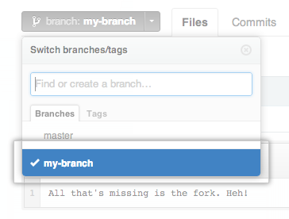
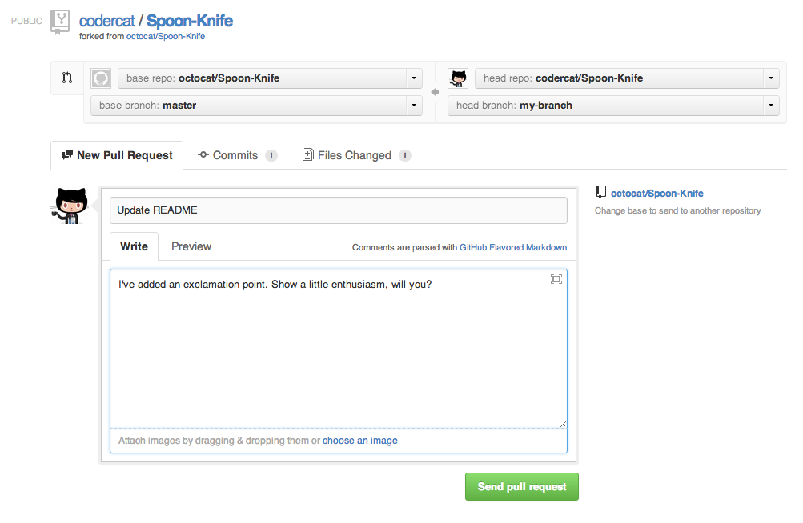
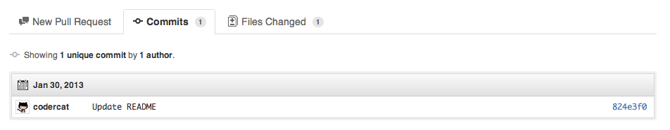
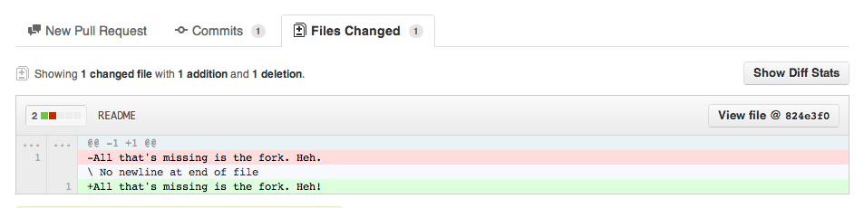
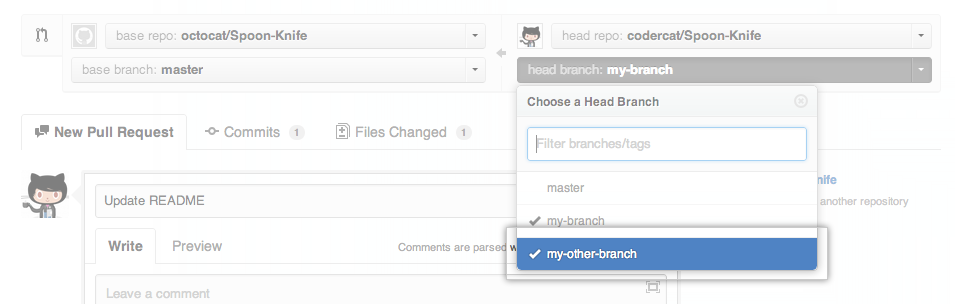
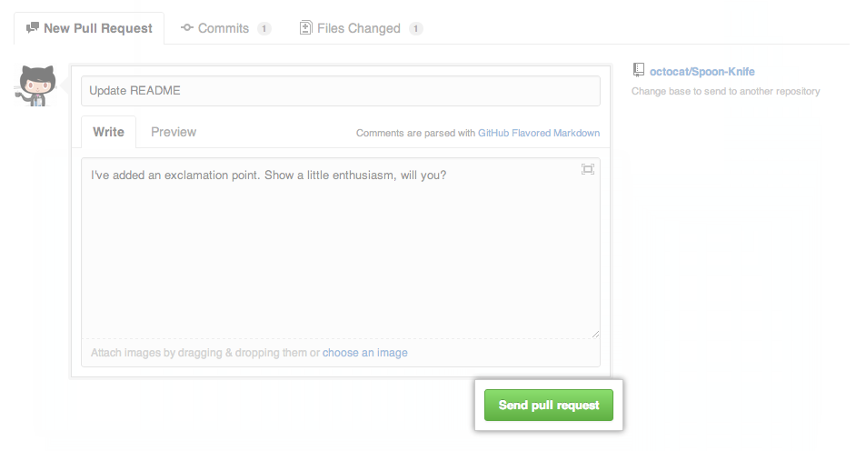
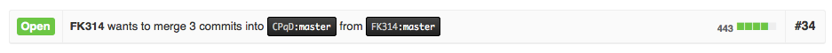

藉由GitHub的Pull Request功能，可以將原本Fork倉庫之後的修改模並回原本倉庫。也就是對原本的軟體進行改進之後，將這些改進讓原本的軟體維護團隊合併回原本的軟體，藉此改進軟體以及修復問題等等。
在團隊開發中亦可以用同樣的方式，將不同的改進放在不同的倉庫中，等到完成之後，在藉由Pull Requests合併回原本的倉庫裡。
同樣地，GitHub官方也一份英文版的教學文件。
假設作品已經完成，準備發起Pull Request來繳交作品。
首先到自己的倉庫中，切換到準備合併的分支（通常預設為master）：（圖片來自GitHub官方教學文件）
接著點選Pull Request按鈕： （圖片來自GitHub官方教學文件）
（圖片來自GitHub官方教學文件）
點選Pull Request按鈕之後，會出現一個預覽視窗，可以寫上一些說明：（圖片來自GitHub官方教學文件）
可以切換到Commits確認是正確的更動：（圖片來自GitHub官方教學文件）
切換到Files Changed直接檢視更動的內容：（圖片來自GitHub官方教學文件）
在送出Pull Request之前，請先選擇並確認是正確的分支（從自己的分支合併到原始倉庫的controbutions分支）：（圖片來自GitHub官方教學文件）
所有內容都確認好之後，便可以按下Send pull request按鈕送出Pull Request：（圖片來自GitHub官方教學文件）
送出之後，會被引導到Pull Request討論頁面，請將頁面右上方的編號記錄下來，並於填寫報名表單時填上：